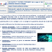
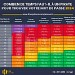
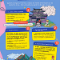

Séquence 03 : Faire bon usage des outils numériques
Repères de progressivité et Connaissances associées
- OST1l : Cybersécurité : protection des données personnelles, traces numériques (témoins de connexion, géolocalisation), identification, authentification, respect de la propriété intellectuelle
- OST1m : Cyberviolence : usurpation d’identité, usage détourné.
- OST1g : fichiers informatiques (fichier texte, fichier image, fichier de type tableur ou CSV) et dossiers, arborescence
- OST1h : extension et format de fichiers, droits d’écriture et de lecture sur les fichiers
Situation déclenchante

Mathieu a été victime d’un piratage de son compte Pronote. Une personne malveillante a accédé à son bulletin scolaire. Elle a modifié les notes et certaines appréciations dans le but de se moquer de lui. Ce faux bulletin a ensuite été diffusé sur plusieurs réseaux sociaux, accompagné de commentaires insultants.
Problématique : Comment protéger ses données personnelles et se protéger sur les réseaux sociaux ?
[chaque élève rédige ses hypothèses dans son cahier]
Activité :
Ressources Activité 2





Fiches De Révision :
Structuration 1 :